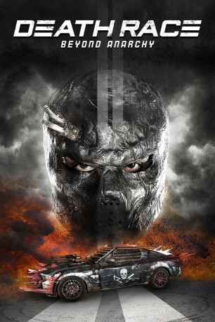

gesehen am 10.10.2018
gesehen am 10.10.2018Alternativ: Death Race 4: Beyond Anarchy gesehen am 10.10.2018
 
 IMDB-Wertung: 5.3 / 10
IMDB-Wertung: 5.3 / 10  Metascore:
Metascore: 
Nachdem ein Angriff auf den im Gefängnis sitzenden, legendären Fahrer Frankenstein gescheitert ist, infiltriert der auf verdeckten Operationen spezialisierte Connor Gibson die Hochsicherheitseinrichtung. Sein Ziel: Am berühmt-berüchtigten Death Race teilzunehmen und Frankenstein endgültig das Handwerk zu legen. Doch als er sich überraschend in die Bardame Jane verliebt, wird klar, dass er um mehr als nur sein eigenes Leben kämpfen muss…
Jahr: 2018
Dauer: 110 Minuten
FSK: 18
Land: USA Studio: UPHETonspuren: DTS - ,
Untertitel: Deutsch, Englisch,
Auflösung: 1080p (1920x1080) Größe: 8663 MB
Genre: Action
Regisseur: Don Michael Paul
Drehbuch: Paul W.S. Anderson, Tony Giglio, Tony Giglio, Don Michael Paul
Soundtrack: Brain Mantia, Melissa Reese, Frederik Wiedmann
Darsteller:
 Zach McGowan als Connor
Zach McGowan als Connor Danny Glover als Baltimore Bob
Danny Glover als Baltimore Bob Cassie Clare als Bexie
Cassie Clare als Bexie Julian Seager als The Fireman
Julian Seager als The Fireman Cameron Jack als The Warden
Cameron Jack als The Warden Terence Maynard als
Terence Maynard als  Danny Trejo als Goldberg
Danny Trejo als Goldberg Nolan North als Frankenstein
Nolan North als FrankensteinDatei: X:\FSK18-Collections\Death Race\Death Race 4 - Beyond Anarchy (2018, FSK18, 1920x1080).mkv seit 10.10.2018
Festplatte: FSK18
 Es gibt insgesamt 7 Filme in der Gruppe 'FSK18-Collections\Death Race'
Es gibt insgesamt 7 Filme in der Gruppe 'FSK18-Collections\Death Race'